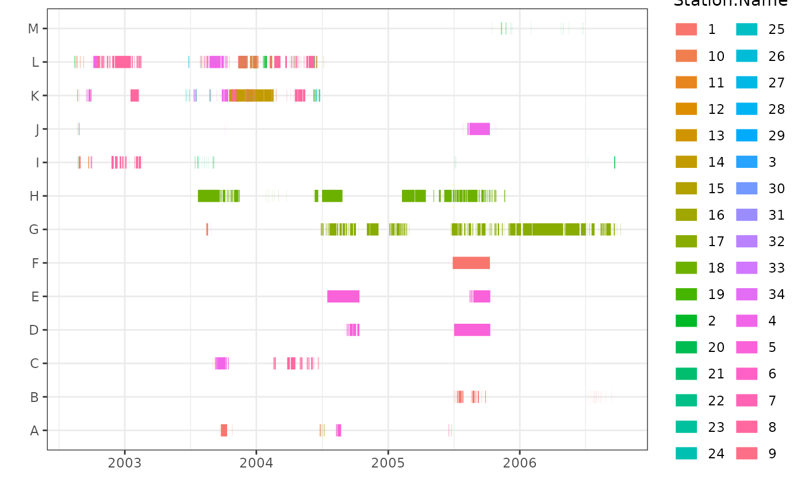
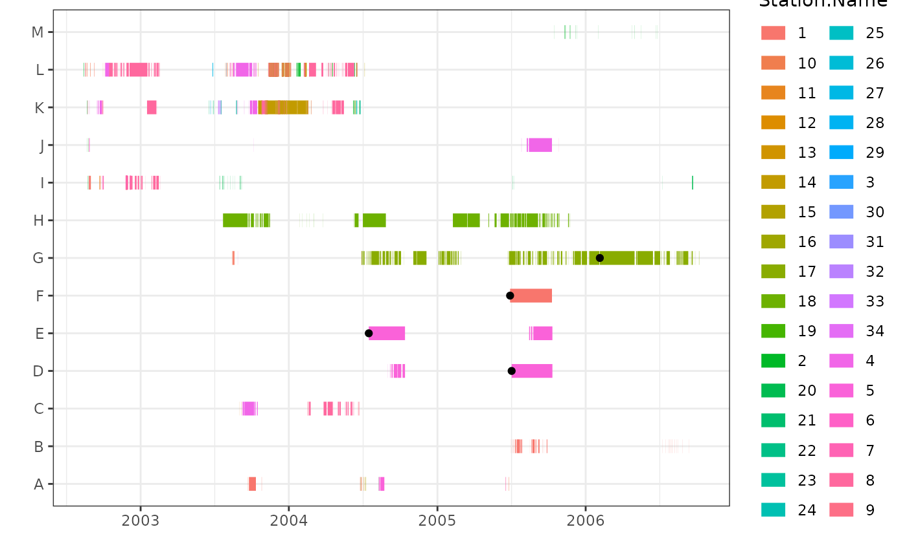

Plot residence events, with the option of plotting identified mortalities. Plotting uses ggplot2. Interactive option also uses plotly.
mortsplot(
data,
type,
ID,
station,
res.start = "auto",
res.end = "auto",
morts = NULL,
singles = TRUE,
interactive = FALSE,
residences = NULL,
units = NULL,
season.start = NULL,
season.end = NULL,
facet = FALSE,
facet.axis = "x",
facet.by = "season",
verbose = TRUE
)a dataframe of residence events. Residence events must include tag ID, location name, start time, and end time.
the method used to generate the residence events. Options are "mort", "actel", "glatos", "vtrack", or "manual".
a string of the name of the column in data that holds the tag or
sample IDs.
a string of the name of the column in data that holds the
station name or receiver location.
a string of the name of the column in data that holds the
start date and time. Must be specified and in POSIXt or character in the format
YYYY-mm-dd HH:MM:SS if type="manual".
a string of the name of the column in data that holds the
end date and time. Must be specified and in POSIXt or character in the format
YYYY-mm-dd HH:MM:SS if type="manual".
a dataframe containing potential mortalities. The dataframe must
have the same ID, station, res.start, res.end, and residences column names
as data.
option to adjust the end times of residence events so single detection events are visible. Adjustment is for visualization purposes only and should not obscure or impact the visualization of other residence events.
option to generate an interactive plot.
an optional character string with the name of the column
in data that holds the duration of the residence events. Required if
generating an interactive plot or applying season.
units of the duration of the residence events in data.
Required if applying season.
the start date/time(s) of the period of interest. If the period of interest is the same in all study years, must be a character string in format "dd-mm". Otherwise, must be in POSIXt, or a character string in format YYYY-mm-dd HH:MM:SS.
the end date/time(s) of the period of interest. If the period of interest is the same in all study years, must be a character string in format "dd-mm". Otherwise, must be in POSIXt, or a character string in format YYYY-mm-dd HH:MM:SS.
option to facet by year or season. If TRUE, then season.start
and season.end must be provided.
option to position facets along x or y axis. Options are
"x" and "y". Default is "x". Note that facet.axis can only be "y" if
facet.by="year".
option to facet by "season" (as defined with season.start
and season.end) or "year". Default is "season".
option to display updates and progress bar as function is run. Default is TRUE.
a ggplot2 plot. Additional arguments (e.g., formatting axes,
legend, aes, manual colour scales) can be added as for any ggplot2 plot.
If interactive=TRUE,
returns a plotly plot.
plot<-mortsplot(data=events,type="mort",ID="ID",station="Station.Name")
plot

# With mortalities plotted over residences:
morts<-morts(data=events,type="mort",ID="ID",station="Station.Name",
method="any",verbose=FALSE)
#>
|
| | 0%
|
|====== | 8%
|
|============ | 17%
|
|================== | 25%
|
|======================= | 33%
|
|============================= | 42%
|
|=================================== | 50%
|
|========================================= | 58%
|
|=============================================== | 67%
|
|==================================================== | 75%
|
|========================================================== | 83%
|
|================================================================ | 92%
|
|======================================================================| 100%
|
| | 0%
|
|====== | 8%
|
|============ | 17%
|
|================== | 25%
|
|======================= | 33%
|
|============================= | 42%
|
|=================================== | 50%
|
|========================================= | 58%
|
|=============================================== | 67%
|
|==================================================== | 75%
|
|========================================================== | 83%
|
|================================================================ | 92%
|
|======================================================================| 100%
plot<-mortsplot(data=events,type="mort",ID="ID",station="Station.Name",
morts=morts)
plot
